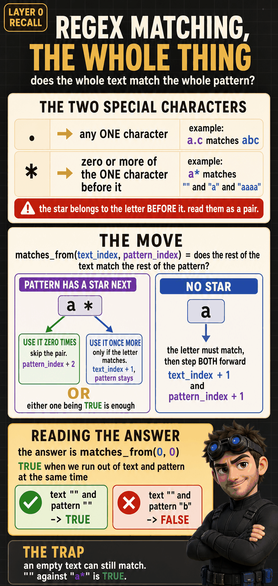
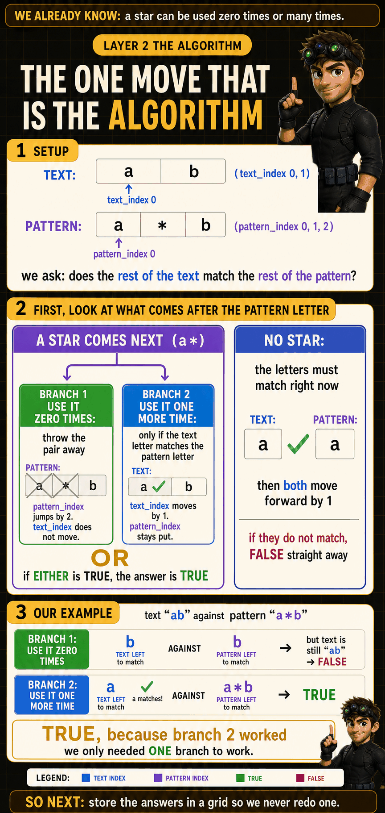
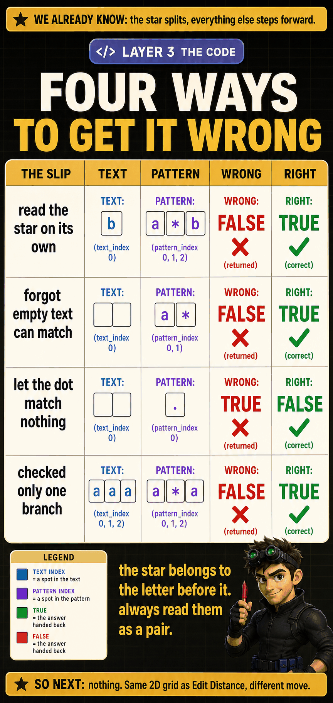

The Problem
Longest Common Subsequence (LeetCode #1143)
Given two strings text1 and text2, return the length of their longest common subsequence.
text1 = "abc", text2 = "abc" → 3
Identical strings. Every character matches.
text1 = "abc", text2 = "def" → 0
No common characters at all.
text1 = "", text2 = "abc" → 0
Empty string. Nothing to match.
text1 = "a", text2 = "a" → 1
Single character, same in both.
text1 = "abcba", text2 = "abcbcba" → 5
text1 itself is a subsequence of text2.
1 What Is It Really Asking?
What does "subsequence" mean?
A subsequence keeps the original order but can skip characters. It does NOT need to be contiguous.
"abcde" (skip nothing) ✓
"a" (skip b,c,d,e) ✓
"" (skip everything) ✓
"ba" (b comes before a in result, but after a in original) ✗
What does "common" mean?
A common subsequence must be a subsequence of BOTH strings. Not just one.
"ace" is a subsequence of text1 (skip b,d). "ace" is a subsequence of text2 (skip nothing). So "ace" is a common subsequence.
"abd" is a subsequence of text1, but NOT of text2 (text2 has no 'b' or 'd'). Not common.
What does "longest" mean?
There might be many common subsequences. We want the one with the maximum length. We return the length, not the subsequence itself.
2 What Would I Naturally Try?
The greedy instinct
Most beginners think: "Walk through text1 left to right. For each character, grab its first available match in text2."
Greedy works here. It feels right. But now try a different input:
3 Where Does That Fail?
What went wrong?
Greedy grabbed 'c' at position 2 in text2, consuming the entire remaining string. That was an irreversible decision. It didn't consider that skipping 'c' would leave room for the longer match "ab".
Why brute force becomes necessary
Since we can't commit to one match greedily, we need to explore: "What if I take this match? What if I skip it?" For every matching pair, both options might lead to different outcomes. That means branching, which means recursion.

4 What Decision Am I Stuck On?
Freeze inside one recursive call
Imagine I'm at position i in text1 and position j in text2. I see two characters: text1[i] and text2[j].
I need to decide: what do I do with these two characters? The answer depends on whether they're the same or not. That's the most natural first check when comparing two sequences: do these two characters match?
![Frozen inside lcs(i,j): I see text1[i] and text2[j], everything before is decided, what do I do now?](dp/images/lcs_frozen_call.png)
5 What Can I Do With These Two Characters?
Case 1: They match
If text1[i] == text2[j], this pair could be part of the LCS. Should I always take it?
Is there ever a reason to skip a match? No. Taking a match gives +1. Skipping it gives +0 at best. A free match is always worth taking. (This is different from Distinct Subsequences, where skipping a match can lead to more total counts. Here we're maximizing length, so a guaranteed +1 is always optimal.)
lcs(i+1, j+1).
Case 2: They don't match
If text1[i] != text2[j], at least one character is useless right now. Which one should I skip? I don't know.
Skip text1[i]: Maybe it doesn't match anything useful in text2. Move to
lcs(i+1, j).Skip text2[j]: Maybe it doesn't match anything useful in text1. Move to
lcs(i, j+1).I don't know which is better. Try both, keep the better result.
6 Why Only These Choices?
Test every idea a beginner might have
No match? Skip text1[i] OR skip text2[j]. Two branches. Take the max.
7 Watch Each Choice Play Out
Before writing recursion, simulate on a tiny example
text1 = "abcde", text2 = "ace". Start at i=0, j=0.
Action: Take the match. +1.
What changed: Both characters consumed. i becomes 1, j becomes 1.
What remains: lcs("bcde", "ce"). Same problem, smaller input.
What's confusing me? 'b' might match something later in text2, or 'c' might match something later in text1. I don't know which skip is better.
Branch A: skip 'b' → lcs("cde", "ce"). Try text1[2]='c' against text2[1]='c'. Match! +1.
Branch B: skip 'c' → lcs("bcde", "e"). Try text1[1]='b' against text2[2]='e'. No match. Keep skipping...
The Choice Diagram
Current Situation: comparing text1[i] and text2[j]
|
Do they match?
|
+----+----+
| |
YES NO
| |
Take it. Can't use either right now.
+1 Skip one, try both options:
Both +-- Skip text1[i]: lcs(i+1, j)
advance. +-- Skip text2[j]: lcs(i, j+1)
lcs(i+1, Take max.
j+1)
8 What Must I Remember? (The State)
Pause the recursion. Another programmer takes over.
What information do they need to continue exactly where I stopped?
ij9 What Do the Variables Mean?
At i: The character I'm currently looking at.
After i: Still undecided. Future calls handle these.
Incrementing i means: I processed text1[i] (matched or skipped it). Move on.
At j: The character I'm currently looking at.
After j: Still undecided. Future calls handle these.
Incrementing j means: I processed text2[j] (matched or skipped it). Move on.
Faded = decided. Highlighted = current. Normal = future.
The function answers: "What's the LCS of 'cde' and 'ce'?"
10 What Does the Function Promise?
Before writing a single line, state the contract in English
lcs(0, 0). "LCS of the full text1 and full text2."
lcs(i+1, j), it must really answer "LCS of text1[i+1:] and text2[j:]." If it doesn't, the recursion is broken.
11 When Must We Stop? (Base Cases)
If I keep making decisions, when must I eventually stop?
Don't look at the recurrence to find base cases. Ask: "What situation makes the answer trivially obvious?"
Why stop? Can't form any common pair without characters from both strings.
Return:
0.Why 0 and not something else? An empty string shares nothing with any string. The longest common subsequence between "" and anything is length 0.
Why stop? Same reason. Need both strings to form a common subsequence.
Return:
0.Symmetric: running out of either string ends the search. The answer can't grow without characters from both sides.
Why not return -infinity? This isn't an "impossible" situation. It's a normal end. Running out of characters is expected.

12 What Smaller Problem Remains? (Transitions)
For each choice, what exactly changes and why?
i → i+1: text1[i] consumed. It matched. Move past it.j → j+1: text2[j] consumed. Same character, same match. Move past it.
1 + lcs(i+1, j+1)Skip one character. Try both options, keep the better result.
lcs(i+1, j)lcs(i, j+1)

13 How Do We Combine the Results?
What exactly is the original question asking us to compute?
The problem says "longest." That means we want the maximum length. When I don't know which skip is better, I try both and keep whichever gives the larger result.
+1 (I matched one character). Why +1? Each match contributes exactly one character to the length. Why not +2? I only matched one pair. Why not +0? I DID accomplish something: pairing two identical characters.
+0 (no match, no gain). Why not +1? Skipping doesn't create a match. Nothing was paired. The skip branch adds nothing to the length.
max(skip_first, skip_second). Why max and not addition? I'm choosing ONE path, not combining two independent paths. Addition would be for counting all ways (like Distinct Subsequences). Here I want the single best path.
"Longest" →
max()."Count of ways" →
+."Shortest / minimum cost" →
min()."Does any way exist?" →
OR.
14 The Recurrence
Now it writes itself
Every branch has already been justified. The recurrence is just a compact summary:
┌ 0 if i == len(text1) or j == len(text2)
lcs(i,j) =│ 1 + lcs(i+1, j+1) if text1[i] == text2[j]
└ max(lcs(i+1,j), lcs(i,j+1)) otherwiseNothing new here. Each line maps to reasoning we already understand:
15 Brute-Force Code
def lcs_length(text1, text2, i, j):
if i == len(text1) or j == len(text2):
return 0
if text1[i] == text2[j]:
return 1 + lcs_length(text1, text2, i + 1, j + 1)
skip_first = lcs_length(text1, text2, i + 1, j)
skip_second = lcs_length(text1, text2, i, j + 1)
return max(skip_first, skip_second)Does every call preserve the promise?
lcs(i+1, j+1): "LCS of text1[i+1:] and text2[j+1:]." ✓ Both characters consumed.lcs(i+1, j): "LCS of text1[i+1:] and text2[j:]." ✓ Skipped text1[i].lcs(i, j+1): "LCS of text1[i:] and text2[j+1:]." ✓ Skipped text2[j].From Reasoning to Code
| Human Reasoning | Code |
|---|---|
| Function promise: "LCS length of remaining suffixes" | def lcs_length(text1, text2, i, j) returns an int |
| State: two positions | Parameters i and j |
| Stop when either string is exhausted | if i == len(text1) or j == len(text2): return 0 |
| Check if current characters match | if text1[i] == text2[j] |
| Match: +1, both advance | return 1 + lcs_length(..., i+1, j+1) |
| No match: try skipping text1[i] | skip_first = lcs_length(..., i+1, j) |
| No match: try skipping text2[j] | skip_second = lcs_length(..., i, j+1) |
| Goal: "longest" = take the better path | return max(skip_first, skip_second) |
16 Why Every Line Exists
Color-highlighted code walkthrough
def lcs_length(text1, text2, i, j):
if i == len(text1) or j == len(text2):
return 0
if text1[i] == text2[j]:
return 1 + lcs_length(text1, text2, i + 1, j + 1)
skip_first = lcs_length(text1, text2, i + 1, j)
skip_second = lcs_length(text1, text2, i, j + 1)
return max(skip_first, skip_second)Implements the promise: "LCS length of the suffixes starting at i and j." The function takes the state (i, j) as parameters and returns an integer.
Step 11 proved: when either string is exhausted, no more matches are possible. Return 0. If this were removed, the function would crash trying to access text1[i] past the end of the string.
Step 4 discovered: the first question at every call is "do these characters match?" This condition splits the logic into two paths.
Step 12 proved: matching consumes one character from each string (+1), and both pointers advance. Why +1? Each match contributes exactly one character to the length. Why both advance? A match uses one from each side.
Step 12 proved: on a mismatch, skip one character from either string. Each skip adds 0. Why try both? Step 6 eliminated all other options (skip both = wasteful, take mismatch = illegal). These two are all that remain.
Step 13 derived: "longest" means max(). I tried two skip paths, and I want the one that gives the bigger LCS. Why not add them? I'm choosing one path, not counting all paths.

17 Concrete Execution Trace
Follow one example through every call and return
text1 = "ac", text2 = "abc". Expected LCS = "ac", length 2.
lcs(0, 0) text1[0]='a', text2[0]='a'. Match!
return 1 + lcs(1, 1)
lcs(1, 1) text1[1]='c', text2[1]='b'. No match.
skip_first = lcs(2, 1) i=2 == len("ac"). Base case. Return 0.
skip_second = lcs(1, 2) text1[1]='c', text2[2]='c'. Match!
return 1 + lcs(2, 3) i=2 == len("ac"). Base case. Return 0.
= 1 + 0 = 1
max(0, 1) = 1
Return 1.
1 + 1 = 2How does a function with just (i, j) return the final answer?
lcs(2, 3) returns 0 (nothing left). lcs(1, 2) returns 1 (matched 'c'). lcs(1, 1) returns max(0, 1) = 1 (best skip).
lcs(0, 0) gets back 1 from its child, adds its own +1 for matching 'a', and returns 2. The answer builds from the bottom up through return values.

18 Why Is It Slow?
Where does repeated work appear?
Different decision paths can arrive at the same (i, j) pair. Trace the tree on "abcde" / "ace":
lcs("abcde", "ace", 0, 0)
'a'=='a' MATCH: 1 + lcs(1, 1)
'b'!='c': max(lcs(2,1), lcs(1,2))
lcs(2, 1) +
'c'=='c' MATCH |
lcs(1, 2) |
'b'!='e': max( |
lcs(2, 2) ------+ BOTH paths
lcs(1, 3)=0) | reach (2,2)!
+Without caching, the recursion tree has exponential branches. For strings of length m and n, it can be O(2^(m+n)) in the worst case. Each no-match call spawns TWO children, and the tree grows exponentially.

19 Memoization
Same state (i, j) always produces the same answer. Cache it.
(i, j). The state. The minimum unique identifier.def lcs_length(text1, text2, i, j, cache):
if i == len(text1) or j == len(text2):
return 0
if (i, j) in cache:
return cache[(i, j)]
if text1[i] == text2[j]:
result = 1 + lcs_length(text1, text2, i + 1, j + 1, cache)
else:
skip_first = lcs_length(text1, text2, i + 1, j, cache)
skip_second = lcs_length(text1, text2, i, j + 1, cache)
result = max(skip_first, skip_second)
cache[(i, j)] = result
return resultBefore computing, check if (i, j) was already solved. If yes, return immediately. This is what eliminates repeated work.
After computing, save the result before returning. Future calls with the same (i, j) will hit the lookup.

20 Tabulation
Why the table dimensions come from the state
State = (i, j). Two state variables → two table dimensions. i ranges from 0 to len(text1). j ranges from 0 to len(text2). So the table is (len(text1)+1) × (len(text2)+1).
Base cases become initialized cells
First row (i=0): empty text1 prefix. LCS = 0 for any text2 prefix.
First column (j=0): empty text2 prefix. LCS = 0 for any text1 prefix.
Both are already 0 from initialization.
Which cells does each transition depend on?
table[i-1][j-1] (diagonal, for match)table[i-1][j] (up, for skip text1[i])table[i][j-1] (left, for skip text2[j])All three are above or to the left. So filling row by row, left to right guarantees every dependency has already been computed.
The filled table
text1 = "ace", text2 = "abcde":
| "" | a | b | c | d | e | |
|---|---|---|---|---|---|---|
| "" | 0 | 0 | 0 | 0 | 0 | 0 |
| a | 0 | 1 | 1 | 1 | 1 | 1 |
| c | 0 | 1 | 1 | 2 | 2 | 2 |
| e | 0 | 1 | 1 | 2 | 2 | 3 |
Gold cells = matches (came from diagonal + 1). Bottom-right = answer: 3.
The rules at each cell
table[i][j] = table[i-1][j-1] + 1Diagonal + 1. Both chars consumed.
table[i][j] = max(table[i-1][j], table[i][j-1])Best of: skip from text1 (up) or text2 (left).
Walking through one row
j=1 (text2[0]='a'): 'c' != 'a'. max(table[1][1], table[2][0]) = max(1, 0) = 1.
j=2 (text2[1]='b'): 'c' != 'b'. max(table[1][2], table[2][1]) = max(1, 1) = 1.
j=3 (text2[2]='c'): 'c' == 'c'. Match! table[1][2] + 1 = 1 + 1 = 2.
j=4 (text2[3]='d'): 'c' != 'd'. max(table[1][4], table[2][3]) = max(1, 2) = 2.
j=5 (text2[4]='e'): 'c' != 'e'. max(table[1][5], table[2][4]) = max(1, 2) = 2.
The code
def lcs_length(text1, text2):
rows = len(text1)
cols = len(text2)
table = [[0] * (cols + 1) for _ in range(rows + 1)]
for i in range(1, rows + 1):
for j in range(1, cols + 1):
if text1[i - 1] == text2[j - 1]:
table[i][j] = table[i - 1][j - 1] + 1
else:
table[i][j] = max(table[i - 1][j], table[i][j - 1])
return table[rows][cols]All zeros. First row and column = base cases (empty prefix has LCS = 0). No separate initialization loop needed.
Row by row, left to right. Dependencies (up, left, diagonal) are always filled before the current cell.
Same as recursion: match consumes both characters. In the table, "both consumed" means look diagonally (one row up, one column left).
Same as recursion: try both skips. In the table, "skip text1[i]" = look up (shorter text1 prefix). "Skip text2[j]" = look left (shorter text2 prefix).
Bottom-right corner: full text1 prefix, full text2 prefix. The answer to the original problem.

21 Space Optimization
Which previous states are actually needed?
Each cell uses three neighbors: table[i-1][j-1], table[i-1][j], table[i][j-1]. All from the current row or the row directly above. No cell ever looks at two rows back.
curr_row[j-1] is already filled (left). prev_row[j] and prev_row[j-1] are from the previous row (already complete). No conflict.
def lcs_length(text1, text2):
if len(text2) > len(text1):
text1, text2 = text2, text1
cols = len(text2)
prev_row = [0] * (cols + 1)
curr_row = [0] * (cols + 1)
for i in range(1, len(text1) + 1):
for j in range(1, cols + 1):
if text1[i - 1] == text2[j - 1]:
curr_row[j] = prev_row[j - 1] + 1
else:
curr_row[j] = max(prev_row[j], curr_row[j - 1])
prev_row, curr_row = curr_row, [0] * (cols + 1)
return prev_row[cols]22 Common Mistakes
return 1 + lcs(i+1, j) ← WRONGSkipping doesn't match anything. No character was paired. +0, not +1.
Detection: lcs("a", "b") returns 1 instead of 0.
return lcs(i+1, j) + lcs(i, j+1) ← WRONGAddition counts all paths. That's for "number of ways" problems (like Distinct Subsequences). Here we want the single longest, so max().
Detection: lcs("ab", "cd") returns a number greater than the shorter string's length.
return 1 + lcs(i+1, j) or return 1 + lcs(i, j+1) ← WRONGA match consumes one from EACH string. If only i advances, text2[j] remains available and the same character gets matched again later. Double-counting.
Detection: lcs("a", "a") returns more than 1.
if i == len(text1): return 1 ← WRONGRunning out of characters isn't a success. It's the end. No match happened here. Return 0.
Detection: lcs("a", "b") returns 1 instead of 0.
Detection: The table produces different results than the recursive solution on the same input.
text1[i] == text2[j] in the tabulation loop ← WRONGTabulation uses 1-indexed table but 0-indexed strings. The correct comparison is
text1[i-1] == text2[j-1].Detection: Index out of bounds when i equals len(text1).

23 Pattern Recognition
"Longest" = optimization. Two strings = two dimensions. Greedy fails because decisions interact. Different decision paths converge on the same state.
On a mismatch, I don't know which character to skip. That uncertainty creates two branches.
Skipping text1[i] then text2[j] and skipping text2[j] then text1[i] both reach lcs(i+1, j+1). Different paths, same destination.
"Longest" → max(). "Count of ways" would mean addition. "Shortest" would mean min().
When I see "two strings" + "order matters" + "optimize", I should consider two-pointer DP with match/skip logic.
Any time I have two sequences and I'm comparing elements pairwise, the structure is: match (diagonal) or skip one (up or left). The only things that change across problems are: what happens on a match (+1 for LCS, +0 for edit distance, use+skip for distinct subsequences), what the combining operation is (max, min, add), and what the base cases are.
24 Rediscover It Six Months Later
How would I reinvent this from scratch?
The 2D Table Family
Two sequences, one grid. Match = diagonal + 1, else max(up, left). Every child is the same grid with different rules.
1 Unique Paths
▶Unique Paths (LeetCode #62)
A robot sits at the top-left corner of an rows x cols grid. It can only move down or right. Return the number of unique paths to reach the bottom-right corner.
rows = 2, cols = 2 → 2
rows = 1, cols = 5 → 1
rows = 5, cols = 1 → 1
rows = 1, cols = 1 → 1
rows = 3, cols = 7 → 28
1 What Is It Really Asking?
A path is a sequence of down/right moves from (0,0) to (rows-1, cols-1). Two paths differ if the sequence of moves differs anywhere.
2 What Would I Naturally Try?
No greedy trap here, every path reaches the same destination. The natural first attempt: draw every path and count them.
3 Where Does That Fail?
18 choose 9 = 48,620 paths. Impossible to draw by hand.
4 What Decision Am I Stuck On?
Freeze the robot on some cell (row, col), mid-grid, not yet at the destination.
From this one cell: which moves are legal?

5 What Can I Do With This ONE Cell?
Standing on (row, col), the robot has exactly two legal next moves.
6 Why Only These Choices?
7 Watch Each Choice Play Out
rows = 2, cols = 3. Start (0,0), destination (1,2).
paths(0,0) = paths(1,0) + paths(0,1)
Down: (2,0) out of bounds → 0.
Right: (1,1).
Down: (1,1). Right: (0,2).
Current Situation: robot standing on (row, col)
|
Is this the destination? Is this out of bounds?
|
+----+----+----+
| | |
DEST OUT OF otherwise
| BOUNDS |
return return Try both moves:
1 0 +-- Down: paths(row+1, col)
+-- Right: paths(row, col+1)
Add them together.
8 What Must I Remember? (The State)
Pause the recursion. What does another programmer need to continue?
rowcol9 What Do the Variables Mean?
10 What Does the Function Promise?
count_paths(0, 0).
11 When Must We Stop? (Base Cases)

12 What Smaller Problem Remains? (Transitions)
row → row+1, col unchanged. No direct reward. Remaining: count_paths(row+1, col)col → col+1, row unchanged. No direct reward. Remaining: count_paths(row, col+1)
13 How Do We Combine Futures?
The problem asks to count unique paths. Down-branch and right-branch paths never overlap, so both are needed, not just the bigger one.
count_paths(row+1, col) paths.
count_paths(row, col+1) paths.
down + right. Addition, not max: I'm counting all paths, and the two sets never overlap.
"Longest / shortest / best" →
max()/min()."Count of ways" →
+."Does any way exist?" →
OR.
14 The Recurrence
┌ 1 if row == rows-1 and col == cols-1
count_paths(row,col) =│ 0 if row ≥ rows or col ≥ cols
└ count_paths(row+1,col) + count_paths(row,col+1) otherwise15 Brute-Force Code
def count_paths(rows, cols, row, col):
if row == rows - 1 and col == cols - 1:
return 1
if row >= rows or col >= cols:
return 0
move_down = count_paths(rows, cols, row + 1, col)
move_right = count_paths(rows, cols, row, col + 1)
return move_down + move_right| Human Reasoning | Code |
|---|---|
| Function promise: paths remaining from here | def count_paths(rows, cols, row, col) |
| State: two positions | row, col |
| Stop at destination | if row == rows-1 and col == cols-1: return 1 |
| Stop off the grid | if row >= rows or col >= cols: return 0 |
| Try moving down | move_down = count_paths(..., row+1, col) |
| Try moving right | move_right = count_paths(..., row, col+1) |
| "Count" = keep both, add | return move_down + move_right |
16 Why Every Line Exists
def count_paths(rows, cols, row, col):
if row == rows - 1 and col == cols - 1:
return 1
if row >= rows or col >= cols:
return 0
move_down = count_paths(rows, cols, row + 1, col)
move_right = count_paths(rows, cols, row, col + 1)
return move_down + move_right
17 Concrete Execution Trace
rows = 2, cols = 3. Expected answer: 3 paths.
count_paths(0, 0) not destination, in bounds.
move_down = count_paths(1, 0)
not destination, in bounds.
move_down = count_paths(2, 0) row=2 ≥ rows=2. Return 0.
move_right = count_paths(1, 1)
not destination, in bounds.
move_down = count_paths(2, 1) row=2 ≥ rows=2. Return 0.
move_right = count_paths(1, 2) row==1==rows-1, col==2==cols-1. Return 1.
0 + 1 = 1
0 + 1 = 1
move_right = count_paths(0, 1)
not destination, in bounds.
move_down = count_paths(1, 1) (recomputed! same call as above) → 1
move_right = count_paths(0, 2)
not destination, in bounds.
move_down = count_paths(1, 2) (recomputed again!) → Return 1.
move_right = count_paths(0, 3) col=3 ≥ cols=3. Return 0.
1 + 0 = 1
1 + 1 = 2
1 + 2 = 3count_paths(0,0) gets 1 from its down-branch and 2 from its right-branch, returns 3. The answer builds bottom-up through return values, just like LCS, with + instead of max.

18 Why Is It Slow?
The trace shows count_paths(1, 1) computed twice, and count_paths(1, 2) too.
Cell (row, col) is reachable by any interleaving of row down-moves and col right-moves. Without caching, this is O(2^(rows+cols)) in the worst case.
19 Memoization
Same state (row, col) always produces the same answer. Cache it.
(row, col).def count_paths(rows, cols, row, col, cache):
if row == rows - 1 and col == cols - 1:
return 1
if row >= rows or col >= cols:
return 0
if (row, col) in cache:
return cache[(row, col)]
move_down = count_paths(rows, cols, row + 1, col, cache)
move_right = count_paths(rows, cols, row, col + 1, cache)
cache[(row, col)] = move_down + move_right
return cache[(row, col)]
20 Tabulation
State = (row, col) → a rows × cols table. table[row][col] = paths from the start TO (row, col) (a prefix view, flipped from the recursion's suffix view).
First row and first column: exactly 1 way (all right, or all down). Initialized, not computed.
Each cell depends on table[row-1][col] (up) and table[row][col-1] (left), both already filled if we go row by row, left to right.
| col 0 | col 1 | col 2 | |
|---|---|---|---|
| row 0 | 1 | 1 | 1 |
| row 1 | 1 | 2 | 3 |
| row 2 | 1 | 3 | 6 |
Gold cells = base cases. Bottom-right = answer: 6.
table[row][col] = table[row-1][col] + table[row][col-1]
def count_paths(rows, cols):
table = [[1] * cols for _ in range(rows)]
for row in range(1, rows):
for col in range(1, cols):
table[row][col] = table[row - 1][col] + table[row][col - 1]
return table[rows - 1][cols - 1]
21 Space Optimization
Each cell only needs the current row or the row directly above, never two rows back.
row_values[col-1] is already updated this pass (left); row_values[col] still holds last row's value (up) until overwritten. Space drops to O(cols).
def count_paths(rows, cols):
row_values = [1] * cols
for row in range(1, rows):
for col in range(1, cols):
row_values[col] = row_values[col] + row_values[col - 1]
return row_values[cols - 1]22 Common Mistakes
if row == rows-1 and col == cols-1: return 0 ← WRONGDetection: 1x1 grid returns 0 instead of 1.
return max(move_down, move_right) ← WRONGDetection: 3x3 grid returns 3 instead of 6.
if row >= rows or col >= cols: return 1 ← WRONGDetection: any grid larger than 1x1 returns too much.
if row == rows and col == cols: return 1 ← WRONGDetection: function always returns 0.
Detection: table disagrees with the recursive solution.

23 Pattern Recognition
"grid" + "movement rules" + "count the ways" → a 2D table where each cell sums its valid incoming neighbors.
24 Rediscover It Six Months Later
2 Edit Distance
▶The Problem
Convert word1 into word2 using insert, delete, or replace, each costing 1. Return the minimum total operations.
"horse", "ros" → 3"intention", "execution" → 5"abc", "abc" → 0"", "abc" → 3"a", "b" → 11 What Is It Really Asking?
Three operations, each costs 1: insert, delete, replace. Find the fewest total operations to turn word1 into word2.
2 What Would I Naturally Try?
Greedy instinct: walk both strings together, replace on any mismatch.
3 Where Does That Fail?

4 What Decision Am I Stuck On?
Freeze at position i in word1 and j in word2, looking at word1[i] and word2[j].
Do word1[i] and word2[j] already agree? If yes, is there ever a reason to spend an operation? If not, which operation fixes it cheapest?
![Frozen inside min_edits(i,j): word1[i] and word2[j] under a spotlight, everything before already handled, three operations available on mismatch](dp/images/edit_distance_frozen.png)
5 What Can I Do With These Two Characters?
min_edits(i+1, j+1).
Replace word1[i] with word2[j]. Move to
min_edits(i+1, j+1).Delete word1[i] entirely. Move to
min_edits(i+1, j).Insert word2[j] into word1. Move to
min_edits(i, j+1).Try all three, keep the smallest result.
6 Why Only These Choices?
No match? Replace, delete, or insert. Take the minimum.
7 Watch Each Choice Play Out
word1 = "ab", word2 = "adb". Start at i=0, j=0.
Replace: 'b'→'d', then 1 more insert needed. Total: 2.
Delete: drop 'b', then 2 more inserts needed. Total: 3.
Insert: insert 'd', then 'b' matches 'b' for free. Total: 1.
Current Situation: comparing word1[i] and word2[j]
|
Do they match?
|
+----+----+
| |
YES NO
| |
Do Spend 1 operation. Try all three:
nothing. +-- Replace: 1 + min_edits(i+1, j+1)
+0 +-- Delete: 1 + min_edits(i+1, j)
Both +-- Insert: 1 + min_edits(i, j+1)
advance. Take min.
min_edits
(i+1,j+1)
8 What Must I Remember? (The State)
ij9 What Do the Variables Mean?
Faded = decided. Highlighted = current. Normal = future.
10 What Does the Function Promise?
min_edits(0, 0).11 When Must We Stop? (Base Cases)
len(word2) - j. Every leftover word2 character needs a dedicated insert.
len(word1) - i. Every leftover word1 character needs a dedicated delete.

12 What Smaller Problem Remains? (Transitions)
Remaining problem:
min_edits(i+1, j+1)1 + min_edits(i+1, j+1)1 + min_edits(i+1, j)1 + min_edits(i, j+1)
13 How Do We Combine the Results?
"Minimum number of operations" means try all three and keep the smallest.
min(replace, delete, insert). One sequence of edits, cheapest wins.
"Longest / most" →
max()."Count of ways" →
+."Shortest / minimum cost / fewest operations" →
min()."Does any way exist?" →
OR.
14 The Recurrence
┌ len(word2) - j if i == len(word1)
│ len(word1) - i if j == len(word2)
min_edits(i,j)=│ min_edits(i+1, j+1) if word1[i] == word2[j]
└ 1 + min(min_edits(i+1,j+1),
min_edits(i+1,j),
min_edits(i,j+1)) otherwise15 Brute-Force Code
def min_edits(word1, word2, i, j):
if i == len(word1):
return len(word2) - j
if j == len(word2):
return len(word1) - i
if word1[i] == word2[j]:
return min_edits(word1, word2, i + 1, j + 1)
replace = min_edits(word1, word2, i + 1, j + 1)
delete = min_edits(word1, word2, i + 1, j)
insert = min_edits(word1, word2, i, j + 1)
return 1 + min(replace, delete, insert)| Human Reasoning | Code |
|---|---|
| Function promise: "min operations for remaining suffixes" | def min_edits(word1, word2, i, j) returns an int |
| State: two positions | Parameters i and j |
| Stop when word1 is exhausted: insert the rest of word2 | if i == len(word1): return len(word2) - j |
| Stop when word2 is exhausted: delete the rest of word1 | if j == len(word2): return len(word1) - i |
| Check if current characters match | if word1[i] == word2[j] |
| Match: free, both advance | return min_edits(..., i+1, j+1) |
| No match: try replace | replace = min_edits(..., i+1, j+1) |
| No match: try delete | delete = min_edits(..., i+1, j) |
| No match: try insert | insert = min_edits(..., i, j+1) |
| Goal: "minimum" = cheapest path, +1 for the operation spent | return 1 + min(replace, delete, insert) |
16 Why Every Line Exists
def min_edits(word1, word2, i, j):
if i == len(word1):
return len(word2) - j
if j == len(word2):
return len(word1) - i
if word1[i] == word2[j]:
return min_edits(word1, word2, i + 1, j + 1)
replace = min_edits(word1, word2, i + 1, j + 1)
delete = min_edits(word1, word2, i + 1, j)
insert = min_edits(word1, word2, i, j + 1)
return 1 + min(replace, delete, insert)
17 Concrete Execution Trace
word1 = "ab", word2 = "adb". Expected minimum = 1 (insert 'd').
min_edits(0, 0) word1[0]='a', word2[0]='a'. Match!
return min_edits(1, 1)
min_edits(1, 1) word1[1]='b', word2[1]='d'. No match.
replace = min_edits(2, 2) i=2 == len("ab"). Base case. Return len(word2)-j = 3-2 = 1.
delete = min_edits(2, 1) i=2 == len("ab"). Base case. Return len(word2)-j = 3-1 = 2.
insert = min_edits(1, 2) word1[1]='b', word2[2]='b'. Match!
return min_edits(2, 3) i=2 == len("ab"). Base case. Return len(word2)-j = 3-3 = 0.
= 0
1 + min(1, 2, 0) = 1 + 0 = 1
Return 1.
Final answer: 1
18 Why Is It Slow?
Every mismatch spawns three children, and different decision paths can land on the same (i, j):
min_edits("horse", "ros", 0, 0)
'h'!='r': 1 + min(
min_edits(1, 1) ← replace path +
min_edits(1, 0) ← delete path |
min_edits(0, 1)) ← insert path |
|
min_edits(1, 1) branches again on 'o'!='r' -> |
one of its children can land back on |
the SAME (i, j) that min_edits(1, 0) |
or min_edits(0, 1) also reaches +Without caching: O(3^(m+n)) worst case, worse than LCS's O(2^(m+n)) since there's one more branch per mismatch.
19 Memoization
Same state (i, j) always produces the same answer. Cache it.
(i, j).def min_edits(word1, word2, i, j, cache):
if i == len(word1):
return len(word2) - j
if j == len(word2):
return len(word1) - i
if (i, j) in cache:
return cache[(i, j)]
if word1[i] == word2[j]:
result = min_edits(word1, word2, i + 1, j + 1, cache)
else:
replace = min_edits(word1, word2, i + 1, j + 1, cache)
delete = min_edits(word1, word2, i + 1, j, cache)
insert = min_edits(word1, word2, i, j + 1, cache)
result = 1 + min(replace, delete, insert)
cache[(i, j)] = result
return result
20 Tabulation
State = (i, j) → table is (len(word1)+1) × (len(word2)+1). table[i][j] = minimum edits to turn word1[:i] into word2[:j].
table[0][j] = j (insert j chars). First column: table[i][0] = i (delete i chars). Unlike LCS, edges are not zero.
Each cell depends on the diagonal (match/replace), up (delete), and left (insert), so fill row by row, left to right.
word1 = "ros", word2 = "horse":
| "" | h | o | r | s | e | |
|---|---|---|---|---|---|---|
| "" | 0 | 1 | 2 | 3 | 4 | 5 |
| r | 1 | 1 | 2 | 2 | 3 | 4 |
| o | 2 | 2 | 1 | 2 | 3 | 4 |
| s | 3 | 3 | 2 | 2 | 2 | 3 |
Gold cells = matches (diagonal, no +1). Bottom-right = answer: 3.
table[i][j] = table[i-1][j-1]
table[i][j] = 1 + min(diag, up, left)
def min_edits(word1, word2):
rows = len(word1)
cols = len(word2)
table = [[0] * (cols + 1) for _ in range(rows + 1)]
for i in range(rows + 1):
table[i][0] = i
for j in range(cols + 1):
table[0][j] = j
for i in range(1, rows + 1):
for j in range(1, cols + 1):
if word1[i - 1] == word2[j - 1]:
table[i][j] = table[i - 1][j - 1]
else:
table[i][j] = 1 + min(
table[i - 1][j - 1],
table[i - 1][j],
table[i][j - 1]
)
return table[rows][cols]
21 Space Optimization
Each cell only uses the current row and the row directly above, never two rows back.
def min_edits(word1, word2):
cols = len(word2)
prev_row = list(range(cols + 1))
curr_row = [0] * (cols + 1)
for i in range(1, len(word1) + 1):
curr_row[0] = i
for j in range(1, cols + 1):
if word1[i - 1] == word2[j - 1]:
curr_row[j] = prev_row[j - 1]
else:
curr_row[j] = 1 + min(prev_row[j - 1], prev_row[j], curr_row[j - 1])
prev_row, curr_row = curr_row, [0] * (cols + 1)
return prev_row[cols]22 Common Mistakes
replace = min_edits(i+1, j+1) used directly ← WRONGDetection: min_edits("a", "b") returns 0 instead of 1.
return 1 + max(replace, delete, insert) ← WRONGDetection: min_edits("horse", "ros") returns far more than 3.
if i == len(word1): return 0 ← WRONG, should be len(word2) - jDetection: min_edits("", "abc") returns 0 instead of 3.
insert = min_edits(i+1, j) or delete = min_edits(i, j+1) ← swappedDetection: min_edits("abc", "abdc") stops returning 1 consistently.
return 1 + min_edits(i+1, j+1) when matched ← WRONGDetection: min_edits("abc", "abc") returns 3 instead of 0.
table[i][0]/table[0][j] at 0 (LCS-style) instead of i/j.Detection: tabulated answer is lower than the recursive answer.

23 Pattern Recognition
24 Rediscover It Six Months Later
3 Interleaving String
▶The Problem
Interleaving String (LeetCode #97)
Given s1, s2, s3: can s3 be formed by interleaving s1 and s2, keeping each string's internal order?
s1="aab", s2="axy", s3="abxy" → False
s1="", s2="abc", s3="abc" → True
s1="", s2="", s3="" → True
s1="ab", s2="c", s3="abcd" → False (lengths don't add up)
1 What Is It Really Asking?
Pick characters from s1 and s2, one at a time, in each string's original order, to exactly reconstruct s3.
2 What Would I Naturally Try?
Greedy instinct: walk s3 left to right, take from whichever string's next character matches.
3 Where Does That Fail?


4 What Decision Am I Stuck On?
Having consumed i characters from s1 and j from s2, s3 must have absorbed k = i + j characters so far.
s3[k] needs a source: s1[i] or s2[j]. If both match, which one actually supplied it?
![Frozen inside can_interleave(i, j): s3[k] needs a source, does it come from s1[i] or s2[j]?](dp/images/interleaving_frozen.png)
5 What Can I Do?
can_interleave(i+1, j).
can_interleave(i, j+1).
Unlike LCS, there is no skipping. Every character of s3 must be accounted for by exactly one source, right now.
6 Why Only These Choices?
![Interleaving String choice diagram: can s3[i+j] come from s1 or s2?](dp/images/interleaving_choices.png)
7 Watch Each Choice Play Out
s1="aax", s2="aay", s3="aayaax". Start i=0, j=0.
can_interleave(0,0) is True.
Current Situation: need to produce s3[i+j]
|
Does s1[i] match s3[i+j]? --YES--> try can_interleave(i+1, j)
|
also
|
Does s2[j] match s3[i+j]? --YES--> try can_interleave(i, j+1)
|
Neither matches? Dead end. False.
|
Return True if EITHER try returned True.8 What Must I Remember? (The State)
iji + j, not stored.9 What Do the Variables Mean?
10 What Does the Function Promise?
Returns a boolean. Original problem = can_interleave(0, 0).
11 When Must We Stop? (Base Cases)
i == len(s1) and j == len(s2).
False.
len(s1) + len(s2) != len(s3), return False before recursing.
12 What Smaller Problem Remains? (Transitions)
i → i+1, j unchanged. Remaining: can_interleave(i+1, j)j → j+1. Remaining: can_interleave(i, j+1)
13 How Do We Combine Futures?
"Can s3 be formed" is an existence question: if EITHER branch succeeds, the whole thing succeeds.
result_from_s1 OR result_from_s2. We need only one valid interleaving to exist, not both.
14 The Recurrence
┌ i == len(s1) and j == len(s2) if i + j == len(s3)
can_interleave(i,j) =│ (s1[i]==s3[i+j] and can_interleave(i+1,j))
│ OR (s2[j]==s3[i+j] and can_interleave(i,j+1)) otherwise
└ False if neither condition ever fires15 Brute-Force Code
def can_interleave(s1, s2, s3, i, j):
if i + j == len(s3):
return i == len(s1) and j == len(s2)
result = False
if i < len(s1) and s1[i] == s3[i + j]:
result = can_interleave(s1, s2, s3, i + 1, j)
if not result and j < len(s2) and s2[j] == s3[i + j]:
result = can_interleave(s1, s2, s3, i, j + 1)
return result| Human Reasoning | Code |
|---|---|
| Function promise: "can the remaining suffixes interleave into the remaining target?" | def can_interleave(s1, s2, s3, i, j) returns a bool |
| State: two positions. k is derived. | Parameters i and j; target index is i + j, never a parameter |
| Stop when s3 is fully explained | if i + j == len(s3): return i == len(s1) and j == len(s2) |
| Check if s1 could be the source | if i < len(s1) and s1[i] == s3[i + j] |
| Check if s2 could be the source | if j < len(s2) and s2[j] == s3[i + j] |
| Goal: "does ANY interleaving work" = OR the branches | result = branch_s1 or branch_s2, short-circuited via not result |
16 Why Every Line Exists
Color-highlighted code walkthrough
def can_interleave(s1, s2, s3, i, j):
if i + j == len(s3):
return i == len(s1) and j == len(s2)
result = False
if i < len(s1) and s1[i] == s3[i + j]:
result = can_interleave(s1, s2, s3, i + 1, j)
if not result and j < len(s2) and s2[j] == s3[i + j]:
result = can_interleave(s1, s2, s3, i, j + 1)
return resultnot result, since we only need one success.

17 Concrete Execution Trace
s1="ab", s2="cd", s3="acbd" → True.
can_interleave(0, 0) k=0, s3[0]='a'. s1[0]='a' matches. s2[0]='c' doesn't.
try s1: can_interleave(1, 0)
can_interleave(1, 0) k=1, s3[1]='c'. s1[1]='b' no match. s2[0]='c' matches.
try s2: can_interleave(1, 1)
can_interleave(1, 1) k=2, s3[2]='b'. s1[1]='b' matches. s2[1]='d' no match.
try s1: can_interleave(2, 1)
can_interleave(2, 1) k=3, s3[3]='d'. s1 exhausted (i=2). s2[1]='d' matches.
try s2: can_interleave(2, 2)
can_interleave(2, 2) i+j=4=len(s3). i==len(s1) and j==len(s2). Return True.
Return True.
Return True.
Return True.
Return True.Each call answers True/False for its own subproblem; True flows straight back up, no accumulation.

18 Why Is It Slow?
When s3[i+j] matches both s1[i] and s2[j], different branch orders can land on the same (i, j).
can_interleave("aax", "aay", "aayaax", 0, 0)
both match 'a': try (1,0) AND try (0,1)
(1,0): both match 'a' again: try (2,0) AND try (1,1)
(0,1): both match 'a' again: try (1,1) AND try (0,2)
+
(1,1) reached from BOTH paths!Without caching: O(2^(m+n)), exponential.
19 Memoization
Same (i, j) always gives the same boolean. Cache it.
def can_interleave(s1, s2, s3, i, j, cache):
if i + j == len(s3):
return i == len(s1) and j == len(s2)
if (i, j) in cache:
return cache[(i, j)]
result = False
if i < len(s1) and s1[i] == s3[i + j]:
result = can_interleave(s1, s2, s3, i + 1, j, cache)
if not result and j < len(s2) and s2[j] == s3[i + j]:
result = can_interleave(s1, s2, s3, i, j + 1, cache)
cache[(i, j)] = result
return result
20 Tabulation
State (i, j) → table of size (len(s1)+1) × (len(s2)+1). table[i][j] = True if s1[:i] and s2[:j] interleave to form s3[:i+j].
Dependencies: table[i-1][j] (take from s1) and table[i][j-1] (take from s2), no diagonal. Fill row by row, left to right.
s1 = "ab", s2 = "cd", s3 = "acbd":
| "" | c | d | |
|---|---|---|---|
| "" | T | T | F |
| a | T | T | F |
| b | F | T | T |
Green cells = the path that succeeds. Bottom-right = answer.
table[i-1][j] and s1[i-1] == s3[i+j-1]
table[i][j-1] and s2[j-1] == s3[i+j-1]
table[i][j] = take_from_s1 or take_from_s2
def can_interleave(s1, s2, s3):
if len(s1) + len(s2) != len(s3):
return False
rows = len(s1)
cols = len(s2)
table = [[False] * (cols + 1) for _ in range(rows + 1)]
table[0][0] = True
for j in range(1, cols + 1):
table[0][j] = table[0][j - 1] and s2[j - 1] == s3[j - 1]
for i in range(1, rows + 1):
table[i][0] = table[i - 1][0] and s1[i - 1] == s3[i - 1]
for i in range(1, rows + 1):
for j in range(1, cols + 1):
from_s1 = table[i - 1][j] and s1[i - 1] == s3[i + j - 1]
from_s2 = table[i][j - 1] and s2[j - 1] == s3[i + j - 1]
table[i][j] = from_s1 or from_s2
return table[rows][cols]
21 Space Optimization
Each cell only needs the row above and the current row so far. One 1D array suffices, filled left to right (read row[j] before overwriting it).
def can_interleave(s1, s2, s3):
if len(s1) + len(s2) != len(s3):
return False
if len(s2) > len(s1):
s1, s2 = s2, s1
cols = len(s2)
row = [False] * (cols + 1)
row[0] = True
for j in range(1, cols + 1):
row[j] = row[j - 1] and s2[j - 1] == s3[j - 1]
for i in range(1, len(s1) + 1):
row[0] = row[0] and s1[i - 1] == s3[i - 1]
for j in range(1, cols + 1):
from_s1 = row[j] and s1[i - 1] == s3[i + j - 1]
from_s2 = row[j - 1] and s2[j - 1] == s3[i + j - 1]
row[j] = from_s1 or from_s2
return row[cols]22 Common Mistakes
s3[i+j-1], not s3[i+j].

23 Pattern Recognition
24 Rediscover It Six Months Later
4 Distinct Subsequences
▶1 The Problem
source and target, return the number of distinct subsequences of source that equal target.source = "rabbbit", target = "rabbit" → 3
source = "babgbag", target = "bag" → 5
source = "aaa", target = "a" → 3
source = "xyz", target = "abc" → 0
source = "abc", target = "abc" → 1
2 What Is It Really Asking?
source as used/skipped so the used ones, in order, spell exactly target? Different index-sets count as different ways, even with identical characters.
3 What Would I Naturally Try?
Natural instinct: scan source left to right, grab a character the moment it matches the next unmatched target character.
4 Where Does That Fail?
What went wrong?

5 What Decision Am I Stuck On?
Freeze at position i in source and j in target, where source[i] equals target[j].
Should I use source[i] for target[j], or skip it and wait for a later duplicate? Both are legal; I don't know which (or both) contributes to the count.
![Frozen at source[i] equals target[j]: a real match sits in front of me, do I use it now or skip it and wait for a later occurrence?](dp/images/distinct_subs_frozen.png)
6 What Can I Do?
count_ways(i+1, j+1), or skip → count_ways(i+1, j). Both legal.
count_ways(i+1, j).
7 Why Only These Choices?
j advances only when used; i advances every branch.
8 Watch Each Choice Play Out
source = "aab", target = "ab". count_ways(0,0): USE(1,1)=1 (indices 0,2) + SKIP(1,0)=1 (indices 1,2) = 2. Matches expected.
The Choice Diagram
Current Situation: comparing source[i] and target[j]
|
Does source[i] match target[j]?
|
+----+----+
| |
YES NO
| |
Two real Only one legal move.
choices: Skip source[i].
+-- USE: count_ways(i+1, j+1)
+-- SKIP: count_ways(i+1, j) count_ways(i+1, j)
ADD both.
9 What Must I Remember? (The State)
ij10 What Do the Variables Mean?
source[i:] is what's still available to pick from.target[j:] is what's still left to spell.11 What Does the Function Promise?
Returns an integer count, not the subsequences. Original problem: count_ways(0, 0).
12 When Must We Stop?

13 What Smaller Problem Remains?
count_ways(i+1, j+1)
count_ways(i+1, j)
use + skip, both are distinct sets of positions.count_ways(i+1, j)

14 How Do We Combine Futures?
"Number of distinct subsequences" is a count, not a best-of. use and skip produce disjoint sets of ways, so combine with +, not max (max would undercount, like greedy).
15 The Recurrence
┌ 1 if j == len(target)
count_ways(i,j)=│ 0 if i == len(source)
│ count_ways(i+1,j+1) + count_ways(i+1,j) if source[i] == target[j]
└ count_ways(i+1,j) otherwise16 Brute-Force Code
def count_ways(source, target, i, j):
if j == len(target):
return 1
if i == len(source):
return 0
ways = count_ways(source, target, i + 1, j)
if source[i] == target[j]:
ways += count_ways(source, target, i + 1, j + 1)
return ways| Human Reasoning | Code |
|---|---|
| Function promise | def count_ways(source, target, i, j) |
| Stop when target is fully matched | if j == len(target): return 1 |
| Stop when source runs out first | if i == len(source): return 0 |
| Skip is always legal | ways = count_ways(..., i + 1, j) |
| Check if using source[i] is legal | if source[i] == target[j]: |
| If legal, add the "use it" count | ways += count_ways(..., i + 1, j + 1) |
17 Why Every Line Exists
def count_ways(source, target, i, j):
if j == len(target):
return 1
if i == len(source):
return 0
ways = count_ways(source, target, i + 1, j)
if source[i] == target[j]:
ways += count_ways(source, target, i + 1, j + 1)
return ways
18 Concrete Execution Trace
source = "aab", target = "ab". Expected answer = 2.
count_ways(0, 0) source[0]='a', target[0]='a'. Match!
ways = count_ways(1, 0) (skip branch, always computed first)
source[1]='a', target[0]='a'. Match!
ways = count_ways(2, 0)
source[2]='b', target[0]='a'. No match.
ways = count_ways(3, 0) i==len(source)=3, j=0<2. Return 0.
Return 0. (count_ways(2,0) = 0)
ways += count_ways(2, 1)
source[2]='b', target[1]='b'. Match!
ways = count_ways(3, 1) i==3, j=1<2. Return 0.
ways += count_ways(3, 2) j==2==len(target). Return 1.
ways = 0 + 1 = 1 (count_ways(2,1) = 1)
ways = 0 + 1 = 1 (count_ways(1,0) = 1)
ways += count_ways(1, 1)
source[1]='a', target[1]='b'. No match.
ways = count_ways(2, 1) ← same call as above, recomputed from scratch
[identical work repeats] → 1
Return 1. (count_ways(1,1) = 1)
ways = 1 + 1 = 2
Return 2. (count_ways(0,0) = 2)count_ways(2, 1) gets computed twice via different decision paths, same remaining subproblem.

19 Why Is It Slow?
Every match branches twice, so the call tree grows to 2^k, and many branches collide on the same (i, j), especially with repeated characters.
20 Memoization
def count_ways(source, target, i, j, cache):
if j == len(target):
return 1
if i == len(source):
return 0
if (i, j) in cache:
return cache[(i, j)]
ways = count_ways(source, target, i + 1, j, cache)
if source[i] == target[j]:
ways += count_ways(source, target, i + 1, j + 1, cache)
cache[(i, j)] = ways
return waysO(len(source) × len(target)).

21 Tabulation
count_ways(i, j). table[i][len(target)] = 1. table[len(source)][j] = 0 for j < len(target).
Depends on row i+1, so rows fill bottom-up: from i = len(source) down to 0.
def count_ways(source, target):
source_length = len(source)
target_length = len(target)
table = [[0] * (target_length + 1) for _ in range(source_length + 1)]
for i in range(source_length + 1):
table[i][target_length] = 1
for i in range(source_length - 1, -1, -1):
for j in range(target_length - 1, -1, -1):
table[i][j] = table[i + 1][j]
if source[i] == target[j]:
table[i][j] += table[i + 1][j + 1]
return table[0][0]
22 Space Optimization
Each cell only reads row i+1, so one row can be reused, updated in the right direction.
j increasing, so row[j+1] still holds the old value when row[j] is written. Decreasing order would corrupt it.
def count_ways(source, target):
source_length = len(source)
target_length = len(target)
row = [0] * (target_length + 1)
row[target_length] = 1
for i in range(source_length - 1, -1, -1):
for j in range(target_length):
if source[i] == target[j]:
row[j] += row[j + 1]
return row[0]source="aab", target="ab": [0,0,1] → [0,1,1] → [1,1,1] → [2,1,1]. Return 2. O(len(target)) space.
23 Common Mistakes
return max(use, skip) counts ways, not the best one. Detection: count_ways("aaa","a") returns 1 instead of 3.
row[j+1] gets corrupted.

24 Pattern Recognition
25 Rediscover It Six Months Later
5 Regular Expression Matching
▶0 Read This And Stop

matches_from(text_index, pattern_index), meaning "does the rest of the text match the rest of the pattern". When a star follows the pattern letter, the answer is TRUE if either skipping the pair works or consuming one text letter works. Otherwise the letters must match and both spots step forward.
1 The Problem
text and a pattern, decide whether the pattern matches the entire text. The pattern may contain . and *.| Character | Means | Example |
|---|---|---|
. | any one character. Always exactly one, never zero. | a.c matches abc |
* | zero or more of the character immediately before it | a* matches "", a, aaaa |
a* as a single piece, not as an a followed by a *. Almost every bug in this problem comes from forgetting that.
Our running example throughout: text = "ab" and pattern = "a*b". The answer is TRUE.
2 Why We Cannot Just Walk Forward
Walking left to right and matching one character at a time works fine until a star appears. Then it stops being obvious, because the same pattern piece can swallow different amounts of text.
| Pattern | Text | How many times a* was used | Match? |
|---|---|---|---|
a*b | b | zero | yes |
a*b | ab | once | yes |
a*b | aaab | three times | yes |

text = "aaa" with pattern = "a*a": if a* eats all three, nothing is left for the final a. So at every star we must be willing to try both: take none, or take one more.
3 The Question, And The Bookmark
Freeze partway through. We have matched some of the text against some of the pattern. What has to be written down so someone else could finish?
Only two things: how far into the text we are, and how far into the pattern we are. Nothing about how we got there matters, because whether the rest matches depends only on what is left.
matches_from(text_index, pattern_index)
answers TRUE or FALSE: does text from that spot onward match pattern from that spot onward?
Two spots, so the table is two dimensional. That is the same shape as Edit Distance and Interleaving String above, and for the same reason: two sequences being walked at once.
4 The Move
Everything depends on one question asked first: does a star come after the current pattern letter?
Two ways to succeed, and we only need one of them.
Use it zero times. Throw the pair away and jump the pattern forward by 2. The text does not move.
Use it once more. Only allowed if the current letters match. The text moves forward by 1 and the pattern stays put, so the star can be used again.
Either being TRUE makes the answer TRUE.
Only one way to succeed.
The current letters must match right now, either because they are equal or because the pattern has a . there.
If they match, step both spots forward by 1.
If they do not match, FALSE immediately.

Run that on our example. At text_index 0, pattern_index 0, the pattern is a and a star follows, so we try both branches:
| Branch | What is left | Result |
|---|---|---|
use a* zero times | text ab against pattern b | FALSE |
use a* once more | text b against pattern a*b | TRUE |
One branch was enough, so the answer is TRUE.
5 The Base Case
The recursion stops when the pattern runs out. At that point the answer is TRUE only if the text ran out at the same moment.
| Text left | Pattern left | Answer | Why |
|---|---|---|---|
"" | "" | TRUE | both finished together |
b | "" | FALSE | pattern exhausted, text left over |
"" | a* | TRUE | the star can take zero, so the pattern can vanish |
6 The Grid
One box per pair of spots. Rows are how far into the text, columns are how far into the pattern. Each box holds TRUE or FALSE.
| text left ↓ pattern left → | a*b | *b | b | "" |
|---|---|---|---|---|
ab | TRUE | false | false | false |
b | TRUE | false | TRUE | false |
"" | false | false | false | TRUE |
The answer sits in the top left box, because that is the state where nothing has been consumed yet. The bottom right box is the easy one: both ran out together, so TRUE.

The middle column is entirely false, and that is expected rather than a bug. Those states start on a star, which never happens in a real run because a star is always consumed together with the letter before it.
7 The Code
def is_match(text, pattern):
solved = {}
# Does text[text_index:] match pattern[pattern_index:] ?
def matches_from(text_index, pattern_index):
if (text_index, pattern_index) in solved:
return solved[(text_index, pattern_index)]
if pattern_index == len(pattern):
# pattern finished: only TRUE if the text finished too
result = text_index == len(text)
else:
first_matches = (text_index < len(text)
and pattern[pattern_index] in (text[text_index], '.'))
star_follows = (pattern_index + 1 < len(pattern)
and pattern[pattern_index + 1] == '*')
if star_follows:
result = (matches_from(text_index, pattern_index + 2) # use it zero times
or (first_matches
and matches_from(text_index + 1, pattern_index))) # use it once more
else:
result = (first_matches
and matches_from(text_index + 1, pattern_index + 1))
solved[(text_index, pattern_index)] = result
return result
return matches_from(0, 0)"Either the pair contributes nothing and I skip past it, or the current letter matches and I let the star eat it and try again with the same pattern spot."
Note that pattern_index does not advance in the second branch. That is what lets one star consume many characters. Advancing it there is the single most common way to break this.
Cost: there is one box per pair of spots, so len(text) × len(pattern) states, each doing constant work. That is O(n × m) time and space.
8 Traps
| The slip | text | pattern | Wrong | Right |
|---|---|---|---|---|
| read the star on its own instead of as a pair | b | a*b | false | TRUE |
| assumed empty text cannot match | "" | a* | false | TRUE |
| let the dot match nothing | "" | . | TRUE | false |
| advanced the pattern in the "use once more" branch | aaa | a*a | false | TRUE |

9 Rediscovering It
| Question | Answer |
|---|---|
| Why can we not walk forward? | a star can swallow any number of characters, and greedy guessing loses |
| What does one call promise? | does the rest of the text match the rest of the pattern |
| What is the bookmark? | two spots, one in each string |
| What is the move? | star: skip the pair or eat one letter. no star: letters must match, step both |
| Which operator, and why? | or, because the question asks whether a match is possible at all |
| Where is the answer? | the box where nothing has been consumed yet |
Two sequences walked together means a 2D table. A wildcard that can match a variable amount means the cell splits into "use it" or "skip it", combined with or rather than max, because the question is possible-or-not rather than how-good.
The 2D Table Pattern
Same grid, different cell formula
| Problem | Match | No Match | Base |
|---|---|---|---|
| LCS | diag + 1 | max(up, left) | 0's |
| Edit Distance | diag + 0 | 1 + min(diag, up, left) | row/col index |
| Distinct Subs | diag + up | up | first col = 1 |
| Unique Paths | always: up + left | 1's on edges | |
| Interleaving | check s3[i+j-1] from s1 (up) or s2 (left) | prefix match | |